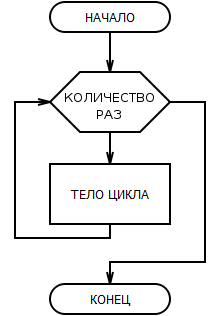
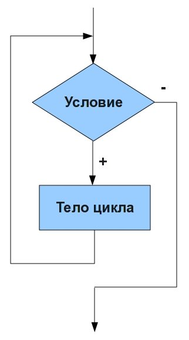

| Тема 1. Циклы. | ||
| Назад | ||
|
Типы циклов Цикл ForЦикл со счетчиком или, как он еще называется — цикл с параметром в Паскале служит для организации повторений (итераций) с заранее известным их количеством раз повторения, т.е. когда точно известно, сколько раз должны выполниться операторы тела цикла.
Блок-схема, соответствующая циклу For:  i — это переменная-счётчик, которая сначала равна нулю. До тех пор, пока она меньше 10, выполняется тело цикла, затем счетчик увеличивается на единицу. For — цикл с предусловием. Это значит, что сначала проверяется условие, и если оно true, то тело выполняется. В скобках объявляется тип переменной счётчика и её начальное значение. Затем указывается условие конца цикла и способ, которым изменяется значение счётчика. Pascal: выход из циклаBREAK И CONTINUE
Цикл Foreach (или совместный цикл)Тело этого цикла выполнится для каждого элемента коллекции. В переменной element будет доступен по очереди каждый элемент массива array. Цикл While
Цикл
Блок-схема, соответствующая циклу while в
Паскале:  Относится к тому же типу циклов, что и For, — цикл с предусловием. С его помощью можно создать безусловный цикл, например while(1) — бесконечный цикл. Чтобы его закончить, нужно использовать служебное слово break. Цикл Do WhileDo While относится к типу циклов с постусловием. Однако здесь код выполнится как минимум один раз, даже если условие false. Вложенные циклыЦиклы можно помещать внутрь друг друга. Это удобно для перебора многомерных коллекций. Код в примере выше выведет в консоль значение каждого элемента из двумерного массива array. Операторы циклов BreakОператор break используется для досрочного выхода из цикла. Когда программа встречает break, цикл немедленно завершается и начинает выполняться код, следующий за циклом. ContinueОператор Continue даёт циклу команду выйти из текущей итерации и перейти к следующей. Этот код выведет в консоль все нечетные числа из диапазона от 0 до 10: |
||
| Конспект подготовлен Бакулиным А. М. 2022 год. | ||